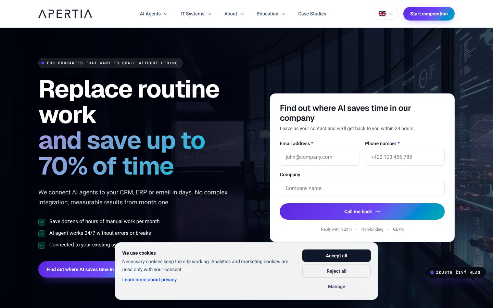
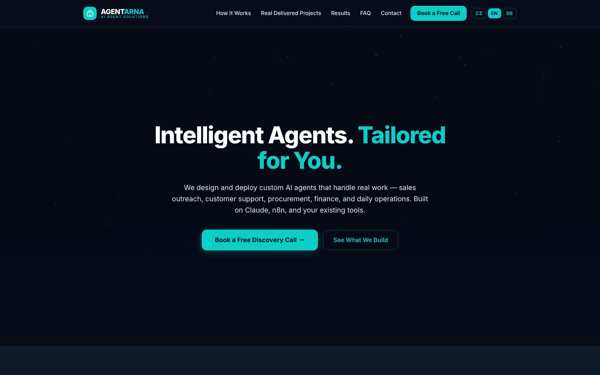
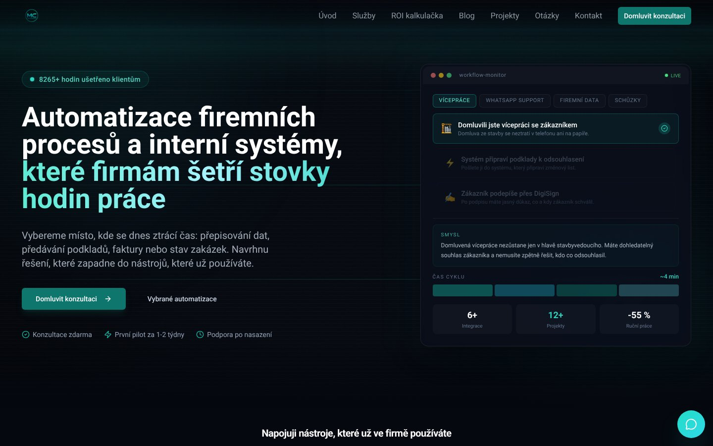

Co udělat
- Přidejte na domovskou stránku sekci „Případové studie“ s 2–4 konkrétními ukázkami výsledků a jasným CTA na kontakt.vysoká prioritaKonkurent je na domovské stránce používá jako přímý důkaz dopadu; bez nich ztrácíte část důvěry a přesvědčivosti u návštěvníků, kteří chtějí vidět reálné výsledky.podle apertia.ai
- Doplňte na domovskou stránku jasnou sekci „Integrace a API“ s konkrétním popisem, co umíte napojit a jaký je typický výstup (např. webhooky, konektory, dokumentace).vysoká prioritaNa domovské stránce tím zvýrazníte výhodu, kterou konkurent podle měření nekomunikuje, a zkrátíte cestu k rozhodnutí pro technicky orientované leady.podle agentarna.com
- Využijte na domovské stránce sociální důkaz (recenze) jako hlavní odlišovač a umístěte ho hned pod hero sekci.vysoká prioritaKonkurent na domovské stránce sociální důkaz nekomunikuje, vy ano; je to rychlá výhoda pro zvýšení důvěry a konverzí u služeb.podle automatizacesai.cz
- Zaveďte na domovské stránce newsletter (odběr novinek/insightů) s jedním jasným benefitem a jednoduchým formulářem.střední prioritaKonkurent tím zachytává poptávku, která není připravená hned kontaktovat; vy bez newsletteru přicházíte o opakovaný kontakt a možnost nurturovat leady.podle apertia.ai
- Doplňte na domovskou stránku konkrétní cenové ukotvení (např. „od…“ nebo typické rozpětí) a uveďte, co je v ceně.střední prioritaKonkurent na domovské stránce pracuje s cenami v pásmu 7 000–300 000 Kč (8 cen), což pomáhá filtrovat poptávky; bez cenového ukotvení roste nejistota a odchody.podle apertia.ai
apertia.ai
https://apertia.ai

Apertia.ai na domovské stránce komunikuje kompletní IT řešení „na jednom místě“ (AI agenti, ERP/CRM, weby, výrobní a skladové systémy) s důrazem na úsporu času až 70 % a rychlou reakci „do 24 hodin“. Oproti vám navíc na domovské stránce zviditelňují případové studie a sběr kontaktů přes newsletter, zatímco v integracích/API jste v paritě a v cenících oba na domovské stránce ceník neuvádíte.
| Atribut | Vy | Oni | Verdikt |
|---|
| Platební metody | karta | prevod | liší se |
| Integrace a API | ano | ano | shoda |
| Ceník na webu | ne | ne | shoda |
| Případové studie | ne | ano | ztrácíte |
| Certifikace | ne | ne | shoda |
| Rezervace termínu online | ne | ne | shoda |
| Telefon v hlavičce | ne | ne | shoda |
| Sociální důkaz | recenze | hodnoceni | liší se |
| Chat na webu | ne | ne | shoda |
| Newsletter | ne | ano | ztrácíte |
| Jazykové verze | — | — | nezměřeno |
Nezobrazujeme atributy, které pro typ webu „služby" nedávají smysl (skryto: 7).
Cenové pásmo — vy: 490–1990 Kč (medián 990, 3 cen) · oni: 7000–300000 Kč (medián 35000, 8 cen). Popisný údaj, neporovnává se jako verdikt.
Kde ztrácíte
- Případové studie: oni ano, vy ne
- Newsletter: oni ano, vy ne
Od minulého měření (2026-09-15T15:33:14.329Z) se nic podstatného nezměnilo.
Co s tím
- Na domovské stránce vám vůči apertia.ai chybí dva silné konverzní prvky: případové studie a newsletter, což snižuje důvěru i schopnost zachytit návštěvníky, kteří ještě nejsou rozhodnutí. V integracích/API jste v paritě, takže rozdíl dělá hlavně prezentace výsledků a práce s leady. Pokud doplníte viditelné case studies a jednoduchý odběr novinek, dorovnáte jejich výhodu bez zásahu do samotné nabídky. Cenové ukotvení na domovské stránce pak pomůže zrychlit kvalifikaci poptávek a snížit tření v rozhodování.
agentarna.com
https://agentarna.com

Agentarna.com na domovské stránce komunikuje služby „AI automatizace & custom AI agenti pro firmy“ a zmiňuje konkrétní technologie (Claude, n8n, Make, OpenAI) spolu se slibem úspory času a možností bezplatné konzultace. Oproti nim na domovské stránce vedete v tom, že komunikujete platbu kartou, integrace/API a máte sociální důkaz ve formě recenzí, zatímco u konkurenta tyto prvky na domovské stránce zachycené nejsou.
| Atribut | Vy | Oni | Verdikt |
|---|
| Platební metody | karta | — | vedete * |
| Integrace a API | ano | ne | vedete |
| Ceník na webu | ne | ne | shoda |
| Případové studie | ne | ne | shoda |
| Certifikace | ne | ne | shoda |
| Rezervace termínu online | ne | ne | shoda |
| Telefon v hlavičce | ne | ne | shoda |
| Sociální důkaz | recenze | — | vedete * |
| Chat na webu | ne | ne | shoda |
| Newsletter | ne | ne | shoda |
| Jazykové verze | — | — | nezměřeno |
* Údaj jsme našli jen u jedné strany. Měříme domovskou stránku — chybějící údaj znamená, že se na ní nekomunikuje, ne že neexistuje.
Nezobrazujeme atributy, které pro typ webu „služby" nedávají smysl (skryto: 7).
Cenové pásmo — vy: 490–1990 Kč (medián 990, 3 cen) · oni: nezměřeno. Popisný údaj, neporovnává se jako verdikt.
Kde vedete
- Platební metody: vy karta, oni —
- Integrace a API: vy ano, oni ne
- Sociální důkaz: vy recenze, oni —
Od minulého měření (2026-09-15T15:33:43.413Z) se nic podstatného nezměnilo.
Co s tím
- Konkurent na domovské stránce staví hlavně na jasném positioning „AI agenti a automatizace“ a na vyjmenování používaných nástrojů, což rychle ukotví očekávání návštěvníka. Vy naopak máte na domovské stránce měřitelně silnější prvky důvěry a „enterprise readiness“ (recenze, integrace/API, platba kartou) — vyplatí se je vytáhnout do prvního scrollu a přímo je navázat na hlavní CTA. Jazykové verze u obou stran nelze z dodaných dat určit, proto se v tomto bodě nedá rozhodnout, kdo má výhodu.
automatizacesai.cz
https://automatizacesai.cz

Konkurent automatizacesai.cz se na domovské stránce profiluje jako dodavatel automatizací firemních procesů, integrací a interních systémů pro české firmy (od poptávky po fakturu bez ručního přepisování) a komunikuje i „ROI kalkulačku“ a sekce Blog/Projekty/Otázky. Oproti vám na domovské stránce nekomunikuje platební metody ani sociální důkaz (recenze), zatímco vy obojí komunikujete; v integracích a API jste v paritě (oba ano). Na domovské stránce konkurenta jsou vidět dvě cenové hladiny v pásmu 20–75 tis. Kč, ale stejně jako vy nemá ceník jako samostatně komunikovaný prvek na domovské stránce.
| Atribut | Vy | Oni | Verdikt |
|---|
| Platební metody | karta | — | vedete * |
| Integrace a API | ano | ano | shoda |
| Ceník na webu | ne | ne | shoda |
| Případové studie | ne | ne | shoda |
| Certifikace | ne | ne | shoda |
| Rezervace termínu online | ne | ne | shoda |
| Telefon v hlavičce | ne | ne | shoda |
| Sociální důkaz | recenze | — | vedete * |
| Chat na webu | ne | ne | shoda |
| Newsletter | ne | ne | shoda |
| Jazykové verze | — | — | nezměřeno |
* Údaj jsme našli jen u jedné strany. Měříme domovskou stránku — chybějící údaj znamená, že se na ní nekomunikuje, ne že neexistuje.
Nezobrazujeme atributy, které pro typ webu „služby" nedávají smysl (skryto: 7).
Cenové pásmo — vy: 490–1990 Kč (medián 990, 3 cen) · oni: 20000–75000 Kč (medián 47500, 2 cen). Popisný údaj, neporovnává se jako verdikt.
Kde vedete
- Platební metody: vy karta, oni —
- Sociální důkaz: vy recenze, oni —
Od minulého měření (2026-09-15T15:34:09.249Z) se nic podstatného nezměnilo.
Co s tím
- Konkurent na domovské stránce staví na jasném popisu přínosu („bez ručního přepisování“) a na prvcích typu ROI kalkulačka a „zdarma“, což může zvyšovat počet poptávek. Vy máte na domovské stránce dvě měřitelné výhody (recenze a platba kartou), které je vhodné vytáhnout do nejviditelnějších míst a použít je jako argument důvěry a pohodlí. U prvků, kde jste v paritě (integrace a API), se vyplatí komunikaci zpřesnit tak, aby bylo okamžitě jasné, co konkrétně umíte dodat a jaký to má dopad.